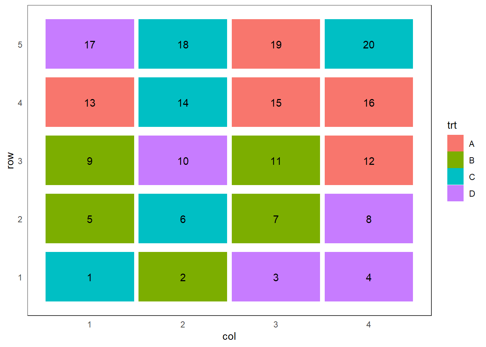
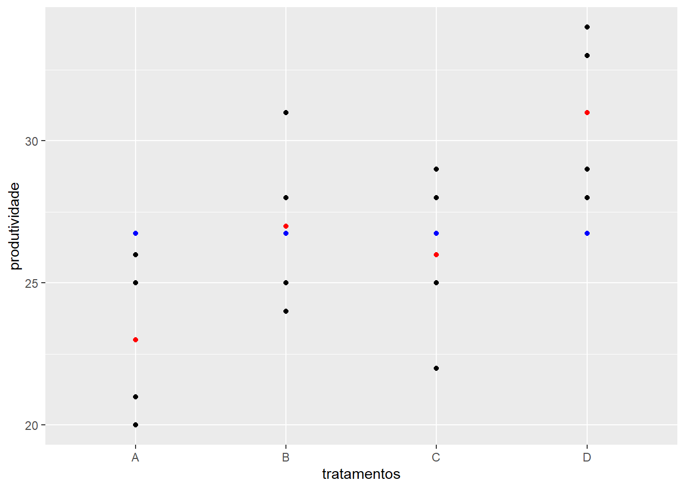
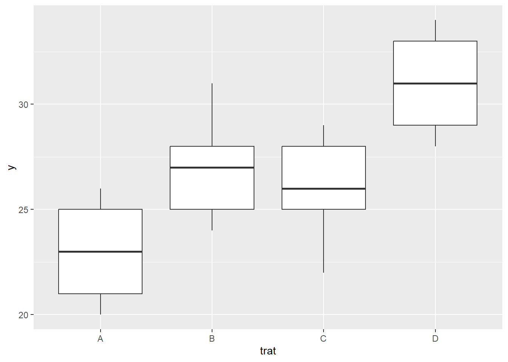

Considere o caso em que se pretende avaliar a produtividade de milho de quatro diferentes variedades. Para tanto será utilizado o delineamento inteiramente casualizado com cinco repetições.
> set.seed(1234)
> sample(rep(c("A", "B", "C", "D"), 5))
> install.packages("agricolae",
dependencies = TRUE)
> library(agricolae)
> trt = LETTERS[1:4]
> delineamento <- design.crd(trt,
r = 5,
serie = 0)
> delineamento
> install.packages("agricolaeplotr",
dependencies = TRUE)
> library(agricolaeplotr)
> plot_design_crd(delineamento,
ncols = 4,
nrows = 5)

Para montar um croqui precisamos de um gride, definido por linhas e colunas
> delineamento$book$Linha <- rep(1:5, each = 4)
> delineamento$book$Coluna <- rep(1:4, times = 5)
> delineamento$book
> install.packages("ggplot2",
dependencies = TRUE)
> library(ggplot2)
> ggplot(delineamento$book,
aes(x = Coluna,
y = Linha,
fill = trt,
label = plots)) +
geom_tile(color="black") +
geom_text() +
xlab("") +
ylab("") #+
> dados <- read.csv2("aula2.csv")
> library(ggplot2)
> ggplot(dados,
aes(x = trat,
y = y)) +
geom_point() +
geom_point(stat = "summary",
fun = mean,
col = "red") +
annotate("point",
x = dados$trat,
y = 26.75,
colour = "blue") +
xlab("tratamentos") +
ylab("produtividade")

> ggplot(dados,
aes(x = trat,
y = y)) +
geom_boxplot()

> n <- with(dados, tapply(y,trat, length))
> soma <- with(dados, tapply(y,trat,sum))
> media <- with(dados, tapply(y,trat,mean))
> variancia <- with(dados, tapply(y,trat,var))
> desv.padr <- with(dados, tapply(y,trat,sd))
> dist.int <- with(dados, tapply(y,trat,IQR))
> f1 <- function(x) max(x)-min(x)
> amplitude <- with(dados, tapply(y,trat,f1))
> resumo <- rbind(n, soma, media, variancia,
desv.padr, amplitude,dist.int)
> rownames(resumo) <- c("n", "Soma", "Média",
"Variância", "Desvio-padrão",
"Amplitude", "Amplitude Interquartílica")
> round(resumo,3)
\(H_0\): \(\mu_1 = \mu_2 = \mu_3 = \mu_4\)
\(H_1\): Pelo menos duas médias de tratamentos diferem entre si.
> modelo <- aov(y ~ trat, dados)
> anova(modelo)